Sophia J. Wang
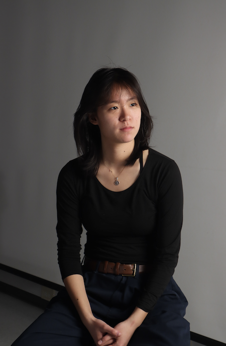
Aerospace Engineer. Chef. Technology Policy Analyst.
Aerospace Engineer. Chef. Technology Policy Analyst.
I’ve always been interested in systems. I became an aerospace engineer to learn how to create the most
complex manmade systems today. Aerospace is a rich intersection of disciplines — mechanical, electrical,
material, software, biological, and more. My area of expertise is the design of highly autonomous systems that
leverage distributed intelligence and controls to mimic the complexity and modularity found naturally in biological life.
Artificial life is especially relevant to extraterrestrial missions, present and future, where complexity must be seeded
and evolved, rather than centrally manufactured and transported.
My time at academic research institutions and NASA gave me rigorous approaches to systems-design, starting from
mission definition and spanning to spiral prototyping phases, integration, testing, and launch.
Now, I’m applying my practice towards human-based systems dynamics on Earth.
Today, I work at the intersection of technology, art, and policy to build tools, seed cultures, and develop strategies that are effective in emergent systems, whether that’s designing low-cost prototyping machines, developing economic indicators and policy frameworks, or exploring founding values for a graduate school. I believe fundamentally in collective striving, and I am committed to democratizing the tools, knowledge, and infrastructure needed to unlock the latent creative and contributory potential of every individual. My main work today is redesigning systems of scholarship, governance, and science through co-evolution.
My current work
Today, I work at the intersection of technology, art, and policy to build tools, seed cultures, and develop strategies that are effective in emergent systems, whether that’s designing low-cost prototyping machines, developing economic indicators and policy frameworks, or exploring founding values for a graduate school. I believe fundamentally in collective striving, and I am committed to democratizing the tools, knowledge, and infrastructure needed to unlock the latent creative and contributory potential of every individual. My main work today is redesigning systems of scholarship, governance, and science through co-evolution.
- Founding Team, Chiba Institute of Technology School for Design and Science
- Sustainability and Digital Architecture Policy Analyst, Bhutan Gelephu Mindfulness City
- Global Ambassador/Fab "Nomad," Fab Foundation & MIT MISTI
- Self Sufficiency Index (SSI), Gokhale Center for Sustainable Development
- an econometrics index for rural development, to be deployed in Pabal and Mandede, India
- Global Arts Collection Archive, Artizon Museum
- a global standard for museum archives and supporting open database, currently implemented with MET Collection,
Paris Musées Collection, the Artizon Cloud, and Louvre Collection
contact me! wangsj@mit.edu wang.joy.sophia@gmail.com
Research
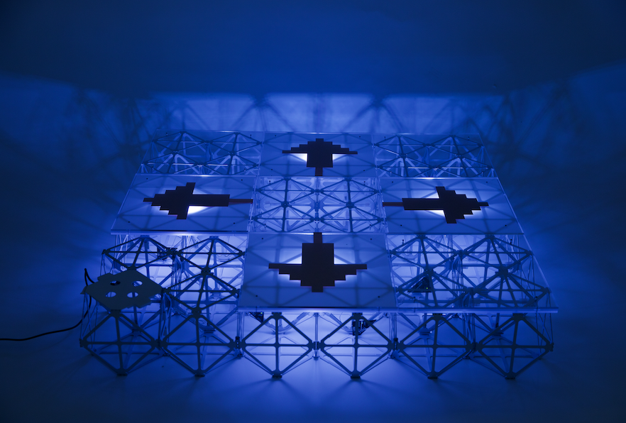
Voxel Invention Kit (VIK)
end-to-end rapid, modular, electromechanical prototyping without machines
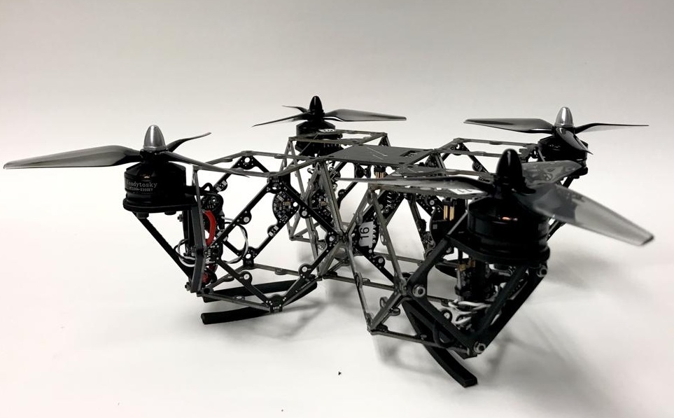
Voxelcopter
modular autonomous aerial system proof of concept with distributed flight controller, scalable by assembly and disassembly

Voxel Starshade
NASA proposal for first demonstration of self assembly in space for 100 m mechanical starshade.

4D Printing Manufacturing Approaches
Liquid crystal elastomers (LCE) are photoresponsive, soft materials with actuation
programmed by print path. Here, a machine for custom manufacturing of LCEs is developed.
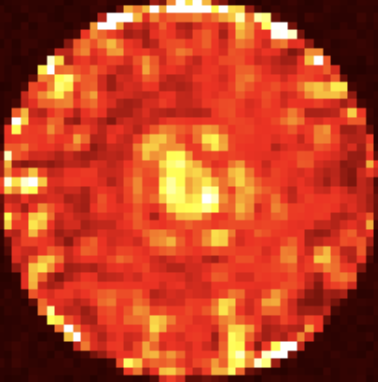
Exoplanet Imaging "Deconfusion" Techniques
Algorithm for determining whether exoplanets in multi-planet systems are in the habitable zone.
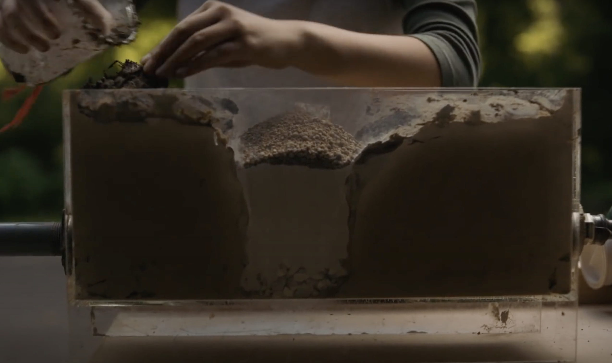
Real-Time Sinkhole Detection
Measuring devices, a network system, and an analysis system for detection and predictive
localization of cover-collapse sinkholes, reaching 93% testing accuracy at <6% the current cost.
Food
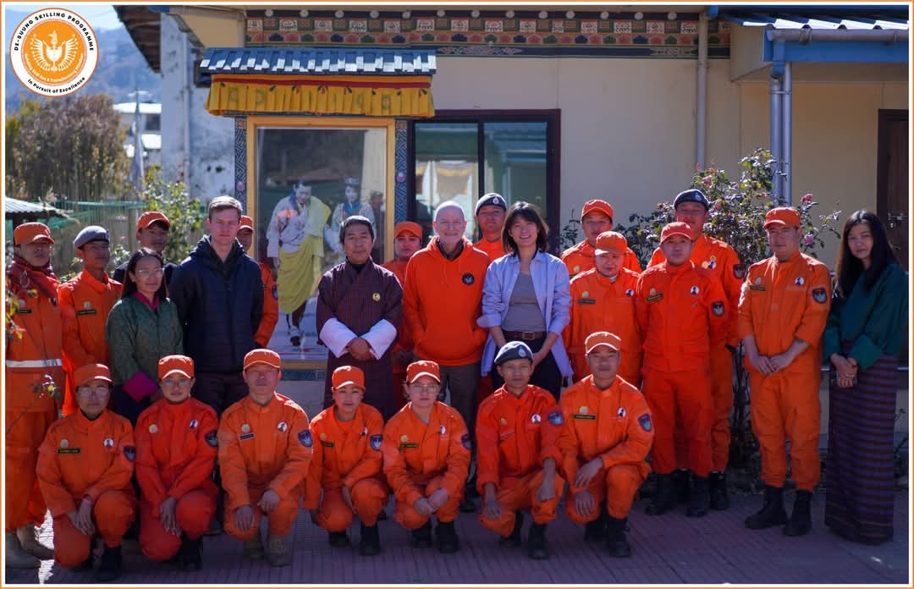
De-suung Skilling Programme
Guest speaker for Bhutan's Royal Culinary Institute with Chef William Yosses.

拉面 (Lamian) Chinese Hand-pulled Noodle Apprentice
Studying under 沈阳市 Shenyang master. 128 strands in 7 hand motions.
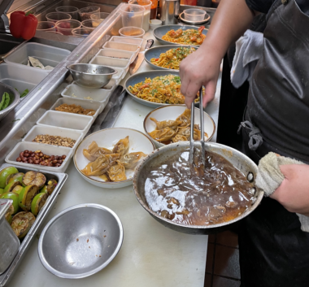
Bone Kettle
Line cook at James Beard nominated Pasadena restaurant Bone Kettle. Mentored by Chef Erwin Tjahyadi.
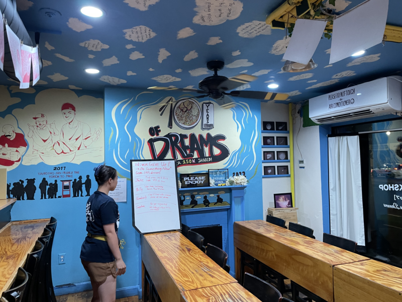
Yume Wo Katare
Host and prep cook at 18-seater Tonkotsu ramen dream workshop.
Policy

Fab Nomad
A global, comparative study across FabLabs, examining democratization of tools for technology creation.
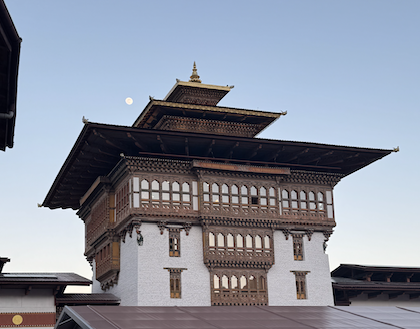
Bhutan R&D Ecosystem
Drafted R&D Center of Excellence (CoE) Framework for Bhutan National Laboratory.
Framework
Extended Framework
Education
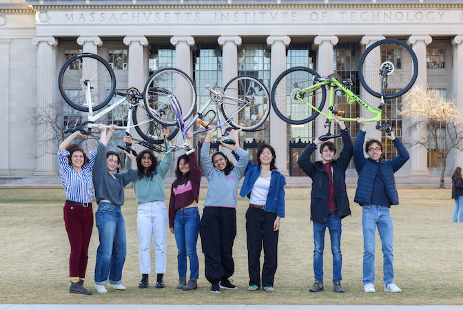
Spokes
Cycling from Washington, DC to San Francisco, teaching digital fabrication to rural communities.
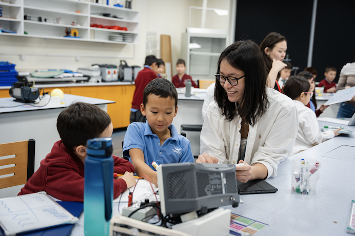
Global Teaching Labs
Taught Space Systems Engineering to grades 7-12 at Haileybury Almaty in Almaty, Kazakhstan.
Visual Storytelling